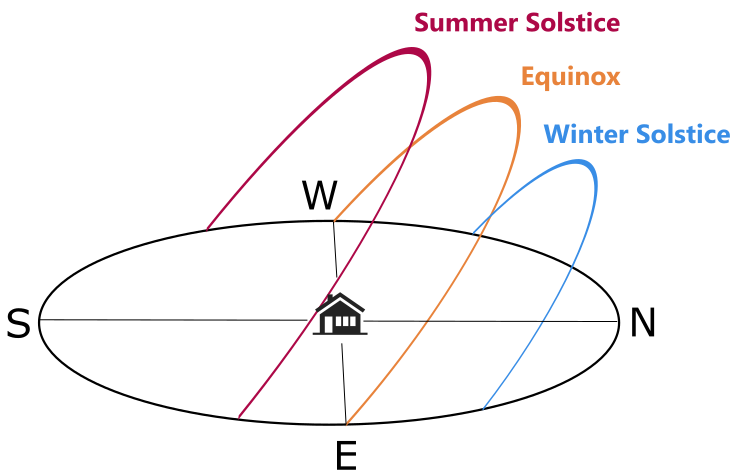
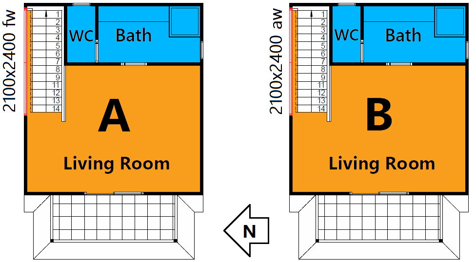
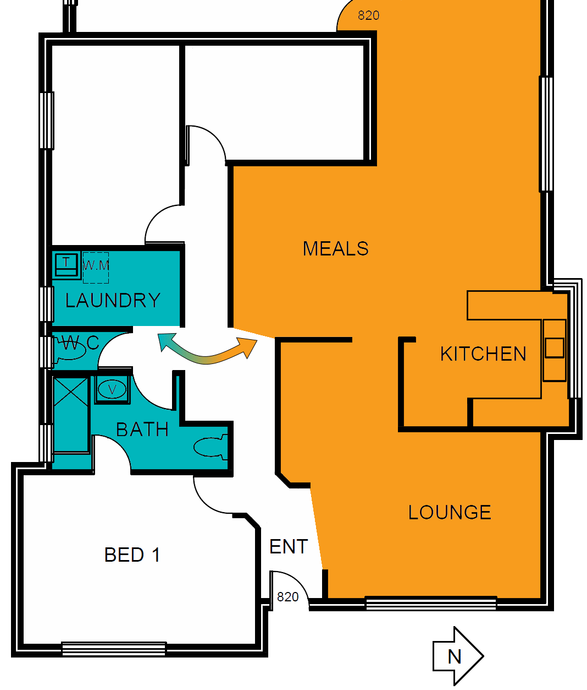
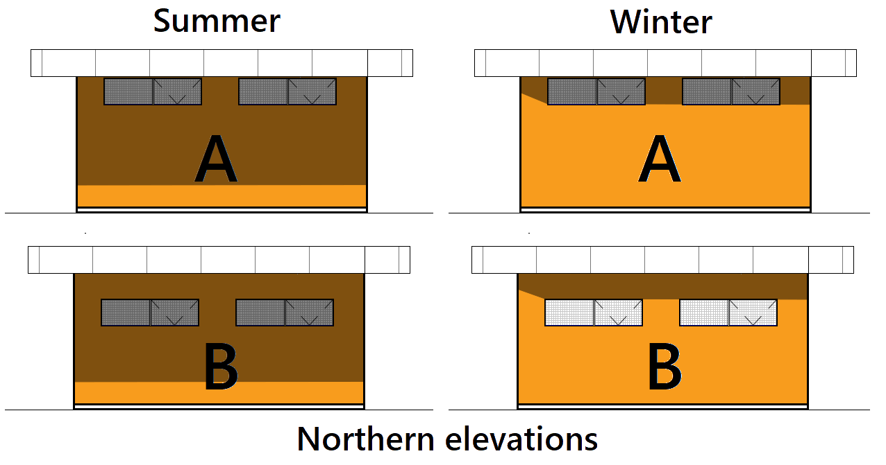

<div class="kc-information">
  	<div class = "container-fluid">
	 	 <div class="row justify-content-sm-center justify-content-md-center justify-content-lg-center justify-content-xl-start ml-xl-2 mr-xl-2">
		    <div class = "col-xs-12 col-sm-12 col-md-12 col-lg-12 col-xl-6 ml-md-4 ml-lg-4 mt-md-4 mt-lg-4 mt-xl-4 mr-md-4 mr-lg-4 mt-4 mr-xl-0 ml-xl-0">
			    
		    	<div class= "card">

			      <div class="kc-heading">

			   		<a [routerLink]="" (click) = "toggleArticle(0)"> <p> 3 Simple Design Tips to <br> Improve Your Star Rating </p>  </a> 

			      </div>
			      
				        <div class="kc-para" *ngIf="article[0]">
					      When a home design performs well in a 6 star assessment, it's likely the design follows the principles behind these three tips: <br><br>
						  <span class= "kc-subheading"> 1. Include North Facing Glass for Winter Heating </span><br><br>
						  As kids, we were all taught the sun rises in the East and sets in the West - but what does it do in between? That depends on your location. If your home is situated below the Tropic of Capricorn, it will track across the sky in an arc tilted towards the north like this:   <br><br>				
						  
						  As angle (or "azimuth") of the sun throughout the year changes, a window which is shaded by an eave in summer may receive direct sunlight in winter. For a home located in a temperate or cold climate zone, a shrewd designer will utilise this effect to keep the home warmer during winter. This use of north facing glass is often referred to as "passive solar heating". Utilising this effect is most beneficial in the main living areas such as the kitchen, dining and family rooms where the occupants will spend most of their time.<br>
						 <span class= "kc-subheading"> The principle behind the rule: </span><i> Use shading and natural sunlight effectively. </i> The application of this principle will vary for climate zones and locations. In the tropics for example, our goal is to shade the windows all year round, as the "winter" will also be hot.

						  <br>
						  <br>
						  <span class= "kc-subheading"> 2. Reduce the External Wall Area to Floor Area Ratio </span><br><br>
						 What's the cheapest way to enclose a volume of air? To enclose it with the least external surface area. The more external surface used, the greater the material cost. Similarly, the more external surface area enclosing the living spaces of a home, the more surfaces there are to transfer heat in and out, making the internal temperatures difficult to regulate. Consider the outlines of two floor plans, both of which enclose 100m<sup>2</sup>: <br><br>
						  <br>
						  Plan A needs 45% less wall area to enclose the same volume as Plan B. Hence, Plan A will achieve thermal comfort more efficiently. The added benefit? Plan A uses 45% less wall material! That's the main reason why a 2013 CSIRO study found that on average, <i> homes with a higher thermal efficiency were cheaper to build.</i>
						  <br>
						  <span class= "kc-subheading"> The principle behind the rule: </span><i> Less external surfaces = greater thermal efficiency. </i> This also applies to floors and ceiling surfaces. For example, in a 3 storey apartment building elevated above above an open-air car park, the second storey will perform better than the 1st and 3rd, as neither its floor or ceiling spaces are exposed to outside air.  
						  <br><br>
					      <span class= "kc-subheading"> 3. Keep The Glazing Area Less than 25% of the Floor Area </span><br><br>
					       Double glazing is almost 10x more thermally conductive than a wall insulated to Australian standards. So when a home design incorporates a large amount of glass (even glass with high thermal performance), its likely to perform poorly. We generally find 6 star compliance is rare (or very expensive) when the total glazing area exceeds 25% of the floor area for a storey. There are of course exceptions to this rule, but not many.
					       <br>
					       <span class= "kc-subheading"> The principle behind the rule: </span><i> Reduce external surface conductace by reducing the percentage of glazing</i>. Not all glass will be detremental to the thermal performance of a home, so the key is to make the right reductions. For example, in a climate zone with cold winters, it's important to reduce the glazing area that does not assist in passive solar heating. 
					       <br><br>
					       For further reading, we highly recommend the  <a href="http://www.yourhome.gov.au/passive-design" target="_blank">Passive Design Guide</a> on the <a href="http://www.yourhome.gov.au" target="_blank">Your Home</a> website. This information has been produced by the Australian Government and is a fantastic resource for designers, architects and builders. There are even 7 star house designs available for free!<br><br>

					       <i>If you'd like to find out how Kelvin Consultants can help in your design process, <a routerLink="/contact">feel free to contact us.</a> </i>
				        </div>
			 	    </div>
		    </div>
		    <div class = "col-xs-12 col-sm-12 col-md-12 col-lg-12 col-xl-6 ml-md-4 ml-lg-4 mt-md-4 mt-lg-4 mt-xl-4 mr-md-4 mr-lg-4 mt-4 mr-xl-0 ml-xl-0">
			   <div class= "card">
			      <div class="kc-heading">
			      	<a [routerLink]="" (click)= "toggleArticle(1)"> <p> 4 Small Design Flaws that <br> Undermine Thermal Performance </p>   </a>
			      </div>
			      <div class="kc-para" *ngIf="article[1]">
			      	Occasionally when inspecting a house plan, it's evident the dwelling will be thermally inefficient. Huge western windows with no shading, or large verandahs encompassing a house in a cold climate zone are both features that ring alarm bells without detailed consideration. However the same design principles that dictate we avoid these features are often betrayed in the smaller details. Cumulatively these small details can be of equal or greater detriment to the thermal efficiency of a home than one huge, alarm-bell-ringing flaw. In this article we'll discuss some of these small design pitfalls and the principles behind fixing them. <br><br>

			      	<span class= "kc-subheading"> 1. Fixed Glass On Top Floor Stair Wells</span><br><br>
			      	Hot air rises! It's important to keep this in mind when designing glazing for stairwells. Hot air will rise up the stairwell from the lower floor, will accumulate heat from glazing exposed to sunlight in the stairwell, and unless dispersed will then unpleasantly congregate in the highest zone attached to the stairs. What effect can this have? Let's look at an example: <br><br>

			      	<br>
					Plan A has a large fixed window in the stairwell, while Plan B has the same amount of glass with awning panes occupying 60% of the area. Because Plan B enables the hot air to be dispersed outside, the living room will require 44% less air conditioning in summer than Plan A, gaining 0.4 stars in the NatHERS system. When numbers start on the right hand side of a decimal point, we naturally feel it represents a small quantity, however 0.4 stars would be the difference between building to the initial design spec and significant glazing or insulation upgrades. <br>

					<span class= "kc-subheading"> Principle: </span> Design ventilation flow paths from one window or door to another that leave no stagnant areas. This is especially important in hot climate zones, or rooms which have high solar heat gains from unshaded glass. <br><br>

					<span class= "kc-subheading"> 2. Single Brick Garage Internal Walls</span><br><br>

					Your garage is a large unconditioned area often attached to your home. It’s internal temperature attenuates to the outside air temperature, so any internal walls adjacent to your living spaces behave similarly in a thermal manner to the other external walls of your home. Now imagine <i>not insulating your external walls </i>- what effect might that have? Poor thermal efficiency. The same is true when the only separation between a garage and a living space is a single brick wall. A standard extruded clay brick will have an R-Value of 0.18, having lower thermal resistance than an inch-thick cardboard box (approximately R0.2). That’s not to say having a cardboard box wall would be <i> better</i>, as the ability of brick to store energy adds a delay to that heat transfer, but the point is clear. Let’s look at some data. <br><br>

					<br>

					By changing the internal walls adjacent to the garage from single brick to brick cavity walls, the total heating and cooling energy for the Office and Entry areas are reduced by 12% . With a common brick cavity wall insulation (Aircell Permicav XV), the total heating and cooling costs are reduced by 21%. <br>

					<span class= "kc-subheading">Principle:</span> Insulating internal walls that separate living areas from unconditioned spaces should be a priority. Whether it’s a brick cavity or stud wall, structures with an internal air gap are ideal. <br><br>

					<span class= "kc-subheading">3. Unenclosed Living or Unconditioned Spaces</span><br><br>

					To develop an intuition for how a small feature will impact a large system, it’s often helpful to imagine the feature applied to the extreme. The feature we’d like to investigate is permanent openings between different areas instead of doors. What effect will this have on the home’s thermal performance? Let's look at an extreme example:<br><br>

					<br>

					The air spaces of the meals, lounge and entry corridor are not separable, either from themselves or the laundry. Hence if the resident wanted to air condition just the lounge area, much of that energy would be expended conditioning these other areas too. The opening which has the greatest impact on thermal efficiency here is the laundry. Usually this area would be unconditioned, so if we can separate it’s airspace from these other conditioned zones, we’ll be saving energy. A door to the laundry improves the home's NatHERS rating by 0.2 stars, enough to prevent the need for glazing upgrades in the lounge or meals areas. <br>

					<span class= "kc-subheading">Principle:</span> Compartmentalise zones which have different functions to minimise energy use. <br><br>

					<span class= "kc-subheading">4. Head Height of Northern Windows Under Eaves</span><br><br>

					Because north facing glass can passively heat a dwelling in winter when the sun dips lower in the sky, it’s one of the primary indicators for good thermal performance in temperate climates. However, <i>not all north facing glass achieves this</i>. Consider the following cases: <br><br>

					<br>

					Due to the window positioning of configuration A, the windows will not add passive solar heating during winter. Configuration B achieves our objective, with the eave blocking out the summer sun while allowing passive solar heating in winter when the sun dips lower in the sky.<br>

					<span class= "kc-subheading">Principle:</span> When designing eave widths and window head heights, consider the changes in the sun's azimuth during the year. A great tool for determining azimuth angles for your location can be found at <a href="http://www.ga.gov.au/geodesy/astro/smpos.jsp" target="_blank">Geoscience Australia</a>.<br><br>

					<i> If you'd like to find out how Kelvin Consultants can help in your design process, <a routerLink="/contact">feel free to contact us.</a></i>


			      </div>
			    </div>
		  	</div>
		
		</div>
	</div>
</div>